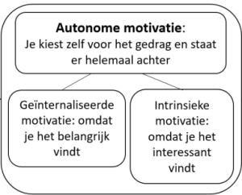

Theorie
Intrinsieke en extrinsieke motivatie
Volgens Adler & Chen is intrinsieke motivatie een van de bekendste vormen van motivatie. *1 Meestal wordt motivatie dan ook onderscheiden in twee hokjes: intrinsieke- en extrinsieke. *3 Bij intrinsieke motivatie komt de motivatie uit de persoon zelf, terwijl bij extrinsieke motivatie het meer om een externe factor zoals bijvoorbeeld een beloning gaat. *3 Bij beloningen kun je denken aan waardemiddelen, erkenning of een gevoel van waardering. Dit hoeft overigens niet altijd een zo te zijn, het zou ook juist een straf kunnen zijn. *1 Hier speelt dan ook niet de activiteit maar de beloning een grotere rol. *1 Iets wat lijkt op intrinsieke motivatie, maar niet helemaal hetzelfde is, is geinternaliseerde motivatie. Hierbij doe je iets omdat je het belangrijk vindt, terwijl je bij intrinsieke motivatie eerder iets doet omdat je het interessant vindt. Dit valt samen onder het kopje autonome motivatie. *2
Prestatiemotivatie
Je bent in sterke mate intrinsiek gemotiveerd en redelijk extrinsiek gemotiveerd. Dat je in sterke mate intrinsiek gemotiveerd bent betekent dat je het echt leuk vindt om te studeren. Je beleeft er plezier aan om beter en wijzer te worden. De kans dat jij iets opsteekt van school/je studie is dan ook groot. Dat je in redelijke mate extrinsiek gemotiveerd bent wil zeggen dat je er ook rekening mee houdt wat je met je studie kunt bereiken: een diploma, geld, status of de erkenning van de mensen waar je van houdt. Toch is voor jou interesse de belangrijkste drijfveer om te studeren.
Ik ben het zeer eens met de opmerking dat ik in sterke mate intrinsiek gemotiveerd ben. Ook dat ik redelijk extrinsiek gemotiveerd ben vind ik kloppen. Wel moet ik zeggen dat ik niks met geidentificeerde motivatie heb. Iets doen omdat het "normaal" is of om aan een ander zijn verwachting te voldoen is mij dan ook onbekend. Ik merk dat vooral mijn intrinsieke motivatie erg gegroeid is sinds ik volwassener ben: op mijn zestiende zou ik nooit naar school gekomen zijn omdat ik echt zelf wilde leren. In die tijd ging ik naar school omdat het moest, nu zit ik tot vrijwillig tot later op school omdat de lesstof mijn interesse wekt en ik graag langer door ga met de opdrachten.
Carrièreankers
De meeste punten gaf je aan de rol: Ergens goed in zijn (24 punten)
Deze mensen hebben de behoefte ergens heel goed in te zijn. Ze zijn over het algemeen onderzoekend ingesteld en worden graag gewaardeerd als expert. Ze worden het liefst aangesproken als de vakman of -vrouw binnen een organisatie. Specialisten werken het liefst op zich zelf. Het kunnen afbakenen van een taak of activiteit is een belangrijke drijfveer.
Toevoeging: Ik ben het hier volledig mee eens. Als ik met iets interessants bezig ben kan ik er volledig in opgaan en wil ik er alles van weten. Dit doet me denken aan vroeger: als ik iets boeiends aan het doen was op de pc stond ik altijd op de automatische piloot. Soms keek ik dan naast me en vroeg ik me af waarom er een kopje koude thee stond, dan bleek dat mijn moeder twee uur daarvoor gevraagd had of ik thee wilde en ik daar 'ja' op had gezegd. Specialiseren en op kunnen gaan in bepaalde taken vind ik twee dingen die erg veel met elkaar te maken hebben.
Daarna gaf je de meeste punten aan: Creativiteit (18 punten)
Voor iemand die creativiteit als carrièreanker heeft, is produceren van nieuwe ideeën of producten het voornaamste doel. De drijfveer is vernieuwend bezig zijn. Een werkomgeving die procedureel is en weinig ruimte laat voor eigen initiatief kan als zeer beperkend ervaren worden. Vaak werken creatieve mensen het liefst zelfstandig of in kleine teams.
Toevoeging: Ik ben al vanaf jongs af aan bezig met muziek maken, Photoshoppen en fotograferen.
Het minst aantal punten gaf je voor: Sociale contacten (0 punten)
Mensen met deze drijfveer hechten veel waarde aan sociale contacten. Gezelligheid en vriendschap zijn belangrijke redenen voor het hebben van een baan. De scheiding tussen werk en privé geldt voor hun minder strikt. Bij loopbaankeuzes zal men zich dan ook snel laten leiden door de vraag of men wel voldoende collega's ontmoet of heeft. Of het werk bevalt hangt af van de mate waarin men kan samenwerken of onder de mensen is.
Toevoeging: Hier kan ik me deels in vinden. Ik zou nooit ergens gaan werken omdat mijn vrienden er ook werken. Ik denk dat als je ergens echt geinteresseerd in bent, en je daar in specialiseert, je automatisch met mensen werkt waar je op z'n minst één ding gemeen mee hebt: die interesse. Verder wil ik liever niet alleen werken om mezelf te onderhouden maar ook plezier ondervinden aan het werk waar ik mee bezig ben.
Conclusie